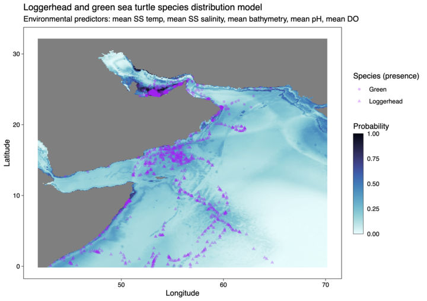
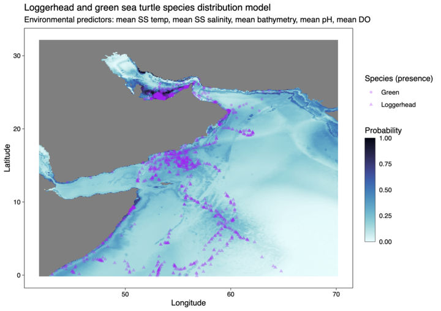

Marine Species Distribution Model (SDM) Tutorial
Click to hear our song! Inspired by Myranda and AI!
(Chorus)
Under the sea, where turtles roam so free,
Using models to unlock their mystery,
Species distribution, a vital contribution,
In the Arabian Sea, our quest for clarity!
 

Overview
This tutorial was developed during OceanHackWeek2023 to provide a simple workflow to developing a marine Species Distribution Model (SDM) using R programming.
Background
Species Distribution Modelling (SDM) also known as niche/environmental/ecological modelling uses an algorithm to predict the distribution of a species across space and time using environmental data. An understanding of the relationship between the species of interest and the physical environment they occupy will inform the selection of relevant environmental factors that will be included in the model.
Biotic information is also needed by SDMs and at the very least locations of individuals are needed. Abundance or densities can also be used as inputs, but are not compulsory. It is worth noting that absences, that is, the locations where individuals of a species are NOT present is just as important because it provides information about the environmental conditions where individuals are not usually sighted. Often absences are not recorded in biological data, but we can use background points (also known as pseudo-absences), which provide information about the full range of environmental conditions available for the species interest in our study area.
For a review of the performance of different SDM algorithms, see the following publications:
- Valavi, Guillera-Arroita, Lahoz-Monfort, Elith (2021). Predictive performance of presence-only species distribution models: a benchmark study with reproducible code. DOI: 10.1002/ecm.1486
- Elith et al (2006). Novel methods improve prediction of species’ distributions from occurrence data. DOI: 10.1111/j.2006.0906-7590.04596.x
Goals
Many tutorials exist to run SDM models, however, most readily available tutorials focus on terrestrial-based models. Our goal through this tutorial is to highlight a marine-based SDM tutorial.
Datasets
Biological Data
Our dataset includes biological presence-only data of four species of sea turtles found in the Indian Ocean. The four species of sea turtles included in our tutorial are:
- Loggerhead, Caretta caretta - Green, Chelonia mydas - Olive Ridley, Lepidochelys olivacea - Hawksbill, Eretmochelys imbricata
However, for this tutorial example model, we will focus on Loggerhead sea turtles data from 2000 until 2023 sourced from the Ocean Biodiversity Information System (OBIS) via the robis package.
Environmental Data
This tutorial focuses on regions in the northern Indian Sea, specifically the western Arabian Sea, Persian Gulf, Gulf of Oman, Gulf of Aden and Red Sea. Environmental predictor variables were sourced via the SMDpredictor R package and includes:
- (https://oceanhackweek.org/ohw23_proj_marinesdms/tutorial/03_sdmpredictors-variables.html)
Workflow/Roadmap
This tutorial is based on the notes by Ben Tupper (Biglow Lab, Maine), and highlights modeling presence-only data via maxnet R package.
Tutorial roadmap
- Presence Data – obtain sea turtle data via
robis - Absence Data – obtain random occurances within our area of interest using
robis - Environmental Data – obtain environmental predictors of interest using
SDMpredictors - Model – run species distribution model and predict using
maxnet - Data Visualizations
References
Bosch S, Fernandez S (2022). sdmpredictors: Species Distribution Modelling Predictor Datasets. R package version 0.2.14, http://lifewatch.github.io/sdmpredictors/.
OBIS (2023) Ocean Biodiversity Information System. Intergovernmental Oceanographic Commission of UNESCO. www.obis.org. Accessed: 2023-08-08.
Steven J. Phillips, Miroslav Dudík, Robert E. Schapire. [Internet] Maxent software for modeling species niches and distributions (Version 3.4.1). Available from url: http://biodiversityinformatics.amnh.org/open_source/maxent/. Accessed on 2023-08-10.
Tutorial developers
- Catherine Courtier:
- Mackenzie Fiss: Third-year PhD student at Northeastern University studying marine biogeochemistry (DOM) and microbial ecology.
- Denisse Fierro Arcos: PhD candidate at the Institute for Marine and Antarctic Studies (IMAS) and Data Officer at the Integrated Marine Observing System (IMOS)
- Paulo Freire: PhD candidate at the University of North Carolina at Charlotte (UNCC) studying marine microbial ecology.
- Eli Holmes: Research Fisheries Biologist, Northwest Fisheries Science Center, NOAA Fisheries.
- Jade Hong: Recently finished ungraduate studies majoring Biology and Marine Science at Boston University.
- Tylar Murray: USF IMaRS Software Engineer - code whisperer, data viz enthusiast, scientific generalist, compulsive overengineerer, & UX PhD
- Caitlin O’Brien: Research Scientist, Columbia Basin Research, School of Aquatic Fishery and Sciences, University of Washington
- Collins Ongore
- Mary Solokas: John A. Knauss Marine Policy Fellow, National Oceanic and Atmospheric Administration
- Laura Tsang:
- Ben Tupper: Senior Research Associate at Bigelow Laboratory for Ocean Science
Who this tutorial is intended:
Some experience programming in R is needed to make the most of this tutorial. To run this tutorial make sure you clone this repository into your local machine by creating a new project that uses version control (git).
The tutorial content was developed in a R version 4.2.2 for Linux. Full session information is included below:
R version 4.2.2 (2022-10-31)
Platform: x86_64-conda-linux-gnu (64-bit)
Running under: Debian GNU/Linux 11 (bullseye)
Matrix products: default
BLAS/LAPACK: /opt/conda/lib/libopenblasp-r0.3.21.so
locale:
[1] LC_CTYPE=C.UTF-8 LC_NUMERIC=C LC_TIME=C.UTF-8
[4] LC_COLLATE=C.UTF-8 LC_MONETARY=C.UTF-8 LC_MESSAGES=C.UTF-8
[7] LC_PAPER=C.UTF-8 LC_NAME=C LC_ADDRESS=C
[10] LC_TELEPHONE=C LC_MEASUREMENT=C.UTF-8 LC_IDENTIFICATION=C
attached base packages:
[1] stats graphics grDevices utils datasets methods base
loaded via a namespace (and not attached):
[1] compiler_4.2.2 tools_4.2.2 Additional resources
If you need additional support with R programming, you can check the following resources:
- R for Data Science - 2nd edition by Wickham, Çetinkaya-Rundel and Grolemund.
- Data analysis and visualisation in R for ecologists
For information on how to use git and GitHub with R, Happy Git and GitHub for the useR by Jenny Bryan is a great resource.